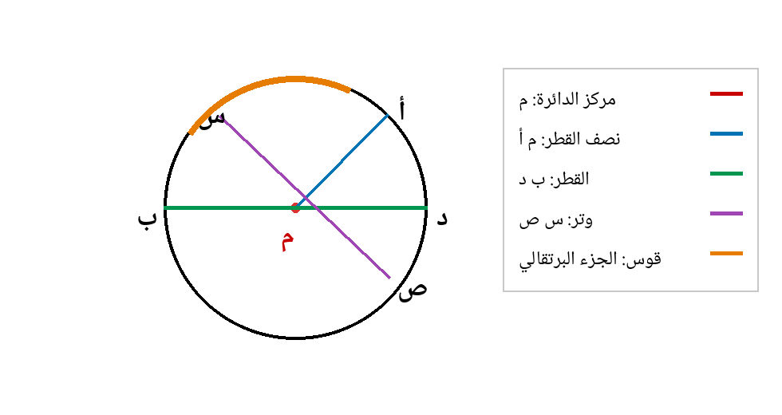

| البند | البيان | البند | البيان |
|---|---|---|---|
| المادة | الرياضيات | الصف | السادس الأساسي |
| الوحدة | السابعة: الهندسة | عنوان الدرس | الدائرة |
| عدد الحصص المقترح | 4 حصص × 45 دقيقة | المجال | الهندسة والقياس |
| مكان التنفيذ | غرفة الصف/مختبر الحاسوب/اللوح الذكي | نوع التحضير | تحضير محوسب مع ورقة عمل تفاعلية |
| الأداة المحوسبة | مختبر عناصر الدائرة | استكشاف عناصر الدائرة، مطابقة، حساب القطر ونصف القطر، ورسم دائرة | |
| نمط التعلم | استكشاف بصري - نشاط عملي - تطبيق محوسب | ينتقل الطالب من المحسوس إلى الرسم والرمز الرياضي | |
| المعلم : زهدي زاهدة | التاريخ: ............ | ||
فكرة الدرس المركزية
يتعرّف الطالب إلى الدائرة بوصفها مجموعة نقاط تبعد بعداً ثابتاً عن نقطة معينة تسمّى مركز الدائرة، ثم يميّز عناصرها الأساسية: المركز، نصف القطر، القطر، الوتر، القوس والمحيط. ويستنتج العلاقة بين القطر ونصف القطر، ويرسم دائرة بمعلومية المركز وطول نصف القطر باستخدام الفرجار، مع توظيف ورقة عمل محوسبة لتثبيت المفاهيم والتقويم الفوري.
الأهداف التعليمية السلوكية
• أن يتعرّف الطالب إلى مفهوم الدائرة ومركزها بلغة رياضية صحيحة.
• أن يسمّي الطالب عناصر الدائرة الأساسية: المركز، نصف القطر، القطر، الوتر، القوس والمحيط.
• أن يميّز الطالب بين نصف القطر والقطر والوتر اعتماداً على التعريف وشرط المرور بالمركز.
• أن يستنتج الطالب العلاقة: طول القطر = 2 × طول نصف القطر، ويوظفها في إيجاد أحدهما إذا عُرف الآخر.
• أن يرسم الطالب دائرة بمعلومية المركز وطول نصف القطر باستخدام الفرجار بدقة مقبولة.
رسم توضيحي مختصر لعناصر الدائرة

المفاهيم والتعلم القبلي والمهارات
| المفاهيم الجديدة | الدائرة، المركز، نصف القطر (نق)، القطر (ق)، الوتر، القوس، المحيط، فتحة الفرجار. |
|---|---|
| التعلم القبلي | تمييز النقطة والقطعة المستقيمة والخط المنحني، استخدام المسطرة، مفهوم التوازي والبعد، مضاعفة العدد والقسمة على 2. |
| المهارات | الملاحظة والتسمية، القياس، التمييز بين عناصر متشابهة، الاستنتاج، الرسم بالفرجار، حل مسائل قصيرة. |
| القيم والاتجاهات | الدقة في الرسم والقياس، التعاون في النشاط العملي، احترام أدوات الهندسة والمحافظة عليها. |
نموذج التحضير
| اليوم/التاريخ | الأهداف | المفاهيم الجديدة | التعلم القبلي | الأنشطة والتدريبات | التقويم | التغذية الراجعة |
|---|---|---|---|---|---|---|
| اليوم: ........ التاريخ: ........ |
أن يتعرّف الطالب إلى مفهوم الدائرة ومركزها، وأن يسمّي نصف القطر. | الدائرة، المركز، نصف القطر، البعد الثابت. | النقطة، القطعة المستقيمة، القياس بالمسطرة، الأشياء الدائرية في البيئة. | مناقشة صور وأدوات دائرية، ثم نشاط الماء. يرسم الطلبة دائرة بغطاء دائري، ويطوونها لتحديد المركز وتساوي أنصاف الأقطار. | سؤال شفوي: ما الدائرة؟ ماذا تسمى النقطة التي تبعد عنها جميع نقاط الدائرة المسافة نفسها؟ سمِّ قطعة تمثل نصف قطر. | صياغة تعريف رياضي وتصحيح الخلط بين الدائرة ومحيطها. |
| اليوم: ........ التاريخ: ........ |
أن يميّز الطالب بين نصف القطر والقطر والوتر، وأن يستنتج العلاقة ق = 2 × نق. | القطر، الوتر، القوس، العلاقة بين ق ونق. | نصف القطر، المضاعفة، القسمة على 2، قطعة مستقيمة تصل بين نقطتين. | رسم دائرة على الشبكة، تسمية القطر والوتر، تحريك نقاط في الورقة المحوسبة، وإكمال جدول ق = 2 × نق. | أجب: هل كل قطر وتر؟ هل كل وتر قطر؟ إذا كان نق = 6 سم فما طول القطر؟ | تلوين القطر بلون مختلف وتأكيد أن القطر نصفي قطر على استقامة واحدة. |
| اليوم: ........ التاريخ: ........ |
أن يرسم الطالب دائرة بمعلومية المركز وطول نصف القطر باستخدام الفرجار. | الفرجار، فتحة الفرجار، مركز الدائرة، نصف القطر. | القياس بالمسطرة، معرفة أن فتحة الفرجار تمثل نصف القطر. | عرض خطوات الرسم بالفرجار، ثم تدريب فردي وتبادل دفاتر للتحقق من القياس. | ارسم دائرة مركزها م ونصف قطرها 4 سم، ثم عيّن عليها قطراً ووتراً لا يمر بالمركز. | تصحيح عملي: فتحة الفرجار تمثل نصف القطر. |
| اليوم: ........ التاريخ: ........ |
أن يوظف الطالب عناصر الدائرة والعلاقة ق = 2 × نق في حل أسئلة محوسبة وورقية. | مراجعة عناصر الدائرة، قطر، نصف قطر، وتر، قوس. | كل المفاهيم السابقة في الدرس. | ينفذ الطلبة الورقة المحوسبة: مطابقة، حساب، تصنيف، ثم ورقة ورقية للتثبيت. | ورقة عمل قصيرة + تذكرة خروج: اذكر الفرق بين القطر والوتر. | تغذية راجعة فورية من الورقة المحوسبة ثم تصحيح جماعي. |
خطة سير الحصص
| الحصة | الزمن | الإجراء التعليمي |
|---|---|---|
| الحصة الأولى | 5 دقائق | تهيئة: عرض أدوات دائرية وصور تموجات الماء، وطرح سؤال: كيف نعرف أن الشكل دائرة؟ |
| الحصة الأولى | 15 دقيقة | نشاط عملي: رسم دائرة باستخدام غطاء دائري أو كأس، ثم طي الدائرة عدة مرات؛ يلاحظ الطلبة أن خطوط الطي تتلاقى في نقطة واحدة تمثل المركز. |
| الحصة الأولى | 10 دقائق | صياغة مفهوم الدائرة ونصف القطر، وقياس أنصاف أقطار مختلفة للتأكد من تساويها. |
| الحصة الأولى | 10 دقائق | تدريب سريع: تسمية المركز وأنصاف الأقطار في رسمين مختلفين. |
| الحصة الأولى | 5 دقائق | تذكرة خروج: اكتب تعريف الدائرة بجملة واحدة وسمِّ نصف قطر في رسم معطى. |
| الحصة الثانية | 7 دقائق | استرجاع: ما المركز؟ ما نصف القطر؟ |
| الحصة الثانية | 15 دقيقة | استكشاف القطر والوتر من خلال رسم دائرية: يحدد الطلبة القطع التي تصل بين نقطتين على الدائرة، ثم يميّزون القطعة التي تمر بالمركز. |
| الحصة الثانية | 10 دقائق | استنتاج القاعدة: ق = 2 × نق، ونق = ق ÷ 2 من جدول أمثلة. |
| الحصة الثانية | 8 دقائق | تطبيقات عددية قصيرة على العلاقة بين القطر ونصف القطر. |
| الحصة الثانية | 5 دقائق | تقويم ختامي قصير: اختيار صحيح/خطأ وتصحيح عبارة خاطئة. |
| الحصة الثالثة | 5 دقائق | تهيئة: عرض فرجار وسؤال: هل فتحة الفرجار تمثل القطر أم نصف القطر؟ |
| الحصة الثالثة | 12 دقيقة | عرض عملي لخطوات رسم دائرة بمركز ونصف قطر محددين. |
| الحصة الثالثة | 15 دقيقة | تدريب فردي: رسم دوائر بأنصاف أقطار مختلفة وتعيين نصف قطر وقطر ووتر. |
| الحصة الثالثة | 8 دقائق | تبادل دفاتر للتحقق من الرسم والقياس وفق قائمة رصد بسيطة. |
| الحصة الثالثة | 5 دقائق | تذكرة خروج: دائرة نق = 3 سم؛ اكتب طول قطرها وارسم تخطيطاً سريعاً. |
| الحصة الرابعة | 8 دقائق | استرجاع سريع لعناصر الدائرة من خلال بطاقات أسماء وتعريفات. |
| الحصة الرابعة | 15 دقيقة | تنفيذ ورقة العمل المحوسبة فردياً أو ثنائياً، مع تسجيل النتائج. |
| الحصة الرابعة | 10 دقائق | حل ورقة عمل ورقية قصيرة للتثبيت. |
| الحصة الرابعة | 7 دقائق | مناقشة الأخطاء الشائعة وتصحيحها على السبورة. |
| الحصة الرابعة | 5 دقائق | تقويم ختامي: سؤال شفوي أو بطاقة خروج حول الفرق بين القطر والوتر. |
استراتيجيات التدريس والوسائل
| استراتيجيات التدريس | الحوار والمناقشة، التعلم بالاكتشاف، التعلم التعاوني، التعلم باللعب، النشاط العملي، التقويم التكويني. |
|---|---|
| الوسائل التعليمية | كتاب الطالب، السبورة، جهاز عرض، حاسوب أو جهاز لوحي، ورقة العمل المحوسبة، فرجار، مسطرة، أوراق، أغطية أو علب ذات سطح دائري، خيط، مقصوصات. |
| التمايز | دعم المتعثرين بنماذج مرسومة ومفردات ملونة، وإثراء المتقدمين بأسئلة: هل أطول وتر في الدائرة هو القطر؟ ولماذا؟ |
الصعوبات والمفاهيم الخاطئة المتوقعة وإجراءات علاجها
| الخطأ أو الصعوبة المتوقعة | إجراءات علاجية مقترحة |
|---|---|
| تسمية كل قطعة داخل الدائرة قطراً. | تأكيد أن القطر وتر خاص يمر بالمركز، مع تلوين القطعة المارة بالمركز ومقارنتها بقطعة لا تمر به. |
| الخلط بين نصف القطر والقطر. | استخدام علاقة بصرية: القطر يتكون من نصفي قطر على استقامة واحدة، ثم تدريب: ق = 2 × نق، نق = ق ÷ 2. |
| ضبط فتحة الفرجار على طول القطر بدلاً من نصف القطر. | تكرار السؤال: فتحة الفرجار تمثل المسافة من المركز إلى نقطة على الدائرة، أي نصف القطر. |
| اعتبار القوس قطعة مستقيمة. | إبراز أن القوس جزء منحني من محيط الدائرة، أما الوتر فهو قطعة مستقيمة تصل بين نقطتين على الدائرة. |
| نسيان وحدة القياس عند إيجاد القطر أو نصف القطر. | تثبيت قاعدة: القطر ونصف القطر أطوال، ووحدتها سم أو وحدة طول، وليست وحدة مربعة. |
تثبيت الأهداف بورقة العمل المحوسبة
| الهدف | موضعه في الورقة المحوسبة | دور المعلم |
|---|---|---|
| تعرّف عناصر الدائرة | أزرار إظهار المركز ونصف القطر والقطر والوتر والقوس في الرسم التفاعلي. | يسأل الطالب قبل الضغط: ماذا تتوقع أن يضاء؟ ولماذا؟ |
| التمييز بين القطر والوتر | نشاط اختيار من متعدد وتصنيف القطع المرسومة. | يعيد التركيز على شرط المرور بالمركز. |
| استنتاج العلاقة بين ق ونق | منزلق نصف القطر يعرض القطر آلياً، ثم أسئلة حسابية. | يوجه الطلبة إلى كتابة القاعدة لفظياً ورمزياً. |
| الرسم بالفرجار | نشاط خطوات مرتبة لرسم دائرة بمركز ونصف قطر محددين. | يتابع تنفيذ الطلاب ويعالج ضبط الفرجار. |
ورقة عمل ورقية مرافقة
تعليمات للطالب: اقرأ التعريف جيداً، وحدد هل المطلوب نقطة أم قطعة مستقيمة أم جزء منحني، ثم اكتب وحدة القياس عند الحساب.
| رقم السؤال | السؤال |
|---|---|
| 1 | أكمل: الدائرة هي مجموعة نقاط تبعد بعداً ثابتاً عن نقطة تسمى __________، وهذا البعد يسمى __________. |
| 2 | ضع صح أو خطأ: كل قطر في الدائرة هو وتر، ولكن ليس كل وتر قطراً. ( ) |
| 3 | إذا كان نصف قطر دائرة 6 سم، فما طول قطرها؟ |
| 4 | إذا كان قطر دائرة 18 سم، فما طول نصف قطرها؟ |
| 5 | ارسم دائرة مركزها م ونصف قطرها 3 سم، ثم عيّن عليها: نصف قطر، قطراً، ووتراً لا يمر بالمركز. |
| 6 | اختر الإجابة الصحيحة: القطعة المستقيمة التي تصل بين نقطتين على الدائرة وتمر بالمركز تسمى: (نصف قطر - قطر - قوس - محيط). |
| 7 | اكتب بجملة واحدة الفرق بين القوس والوتر. |
مفتاح إجابات ورقة العمل
| رقم السؤال | الإجابة النموذجية |
|---|---|
| 1 | المركز، نصف القطر. |
| 2 | صح. |
| 3 | ق = 2 × نق = 2 × 6 = 12 سم. |
| 4 | نق = ق ÷ 2 = 18 ÷ 2 = 9 سم. |
| 5 | رسم صحيح: مركز واضح، فتحة الفرجار 3 سم، قطر يمر بالمركز، وتر لا يمر بالمركز. |
| 6 | قطر. |
| 7 | القوس جزء منحني من محيط الدائرة، أما الوتر فهو قطعة مستقيمة تصل بين نقطتين على الدائرة. |
نشاط إثرائي وتكليف بيتي
| النشاط الإثرائي: ابحث في الصف أو البيت عن ثلاثة أشياء دائرية، وحدد لكل منها: مركزاً تقريبياً، نصف قطر، وقطراً. اكتب: هل يمكن أن يكون القطر أطول وتر في الدائرة؟ وضح بالرسم. |
|---|
| التكليف البيتي: حل تمارين الدرس في كتاب الطالب، ثم ارسم دائرة مركزها ن ونصف قطرها 5 سم، وعيّن عليها قطراً ووتراً وقوساً. |